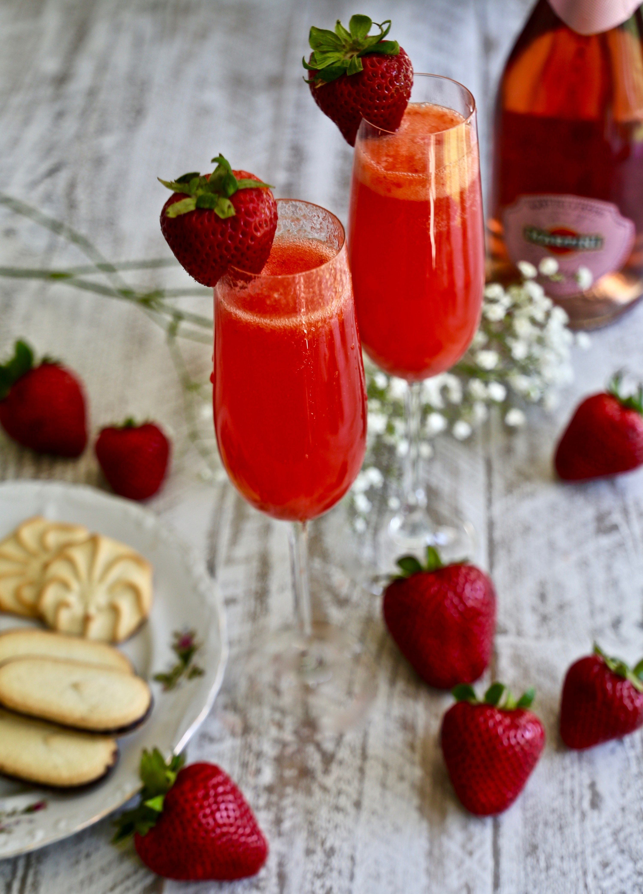

Recette Strawberry Bellini

Description
Une bonne boisson pour la fête des mères, un brunch ou une douche.
Ingrédients
- 3 tasses de fraises, décortiquées et tranchées
- ¼ Sucre de confiserie
- 1 cuillère à soupe d’eau-de-vie
- 1 ½ tasse de vin mousseux réfrigéré
- 3 grosses fraises)
Les Etapes de préparation
- Mélanger 3 tasses de fraises, de sucre de confiserie et d’eau-de-vie ensemble dans un mélangeur jusqu’à consistance lisse. Refroidir au réfrigérateur pendant 10 minutes.
- Répartir le mélange de fraises entre 3 flûtes à champagne; garnir chacun d’environ 1/2 tasse de vin mousseux; remuer. Garnir chaque verre avec 1 fraise.